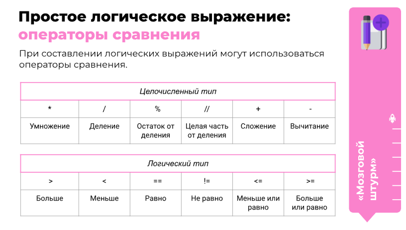
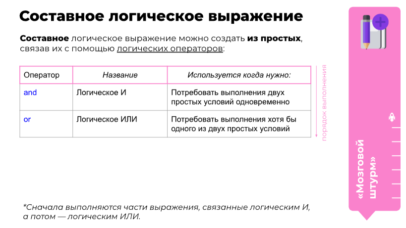

Для вывода данных на экран используется команда print()
Внутри круглых скобок пишем, что хотим вывести на экран. Если это текст, то указываем его внутри кавычек. Числа так же могут быть внутри кавычек.
Пример:
print('Hello World!')
На экран будет выведено: Hello World!
Для ввода данных используется команда input()
Пример:
a = input()
print(a)
В примере мы записываем в переменную а данные, введённые пользователем, и выводим на экран с помощью команды print()
Логические выражения делятся на простые и составные.
 Условный оператор - это команда, выполняющая или не выполняющая действие в зависимости от логического выражения.
Для программирования условного оператора используются команды:
if (если)
else (иначе)
Пример:
a = input()
if a = 0:
....print('a = 0')
else:
....print('a =',a)
(Точки - количество пробелов)
Цикл - это команда, выполняющая указанные действия до тех пор, пока логическое выражение является истинным. Он может быть запрограммирован с помощью оператора while
Пример:
a = input(Введите 0 для завершения цикла)
while a != 0:
....print(Введите 0 для завершения цикла)
....a = input()
В примере цикл будет работать до тех пор, пока пользователь не введёт 0
Цикл for - это цикл, перебирающий элементы конечной последовательности
Пример 1:
for элемент in последовательность:
....Выполнить действие
В примере 1 интерпритатор сам определяет начало, конец и последовательность, счётчик не нужен
Пример 2:
for элемент in range(диапазон):
....Выполнить действие
В примере 2 есть функция range(), которая создаёт последовательность чисел в указанном диапазоне
break - оператор, досрочно прерывающий цикл
На этом пока-что всё, в дальнейшем информация будет обновляться.